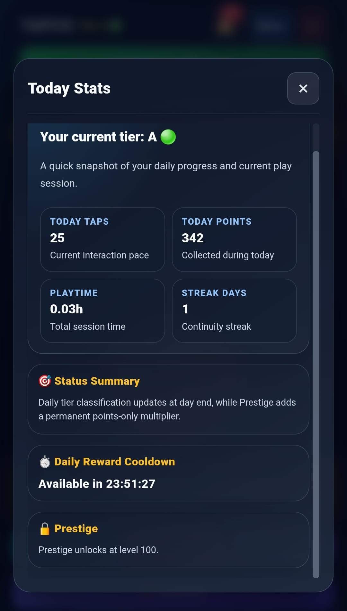

TAPCO GAME
TAPCO GAMEClarity
Rules, policies, and platform expectations are visible and public.
الوضوح
القواعد والسياسات وتوقعات المنصة معروضة بشكل عام وواضح.
Açıklık
Kurallar, politikalar ve platform beklentileri kamusal olarak gorunurdur.
TAPCO GAME runs as a Telegram mini app with server-authoritative gameplay accounting. This means key progression values are validated on the backend before they are committed. This website exists so players can read concrete rules, support steps, and policy boundaries in one place.
تعمل TAPCO GAME كتطبيق مصغر داخل Telegram مع اعتماد الخادم كمرجع نهائي لحسابات اللعب. هذا يعني أن قيم التقدم الأساسية يتم التحقق منها في الخلفية قبل اعتمادها. وُجد هذا الموقع ليعرض قواعد واضحة وخطوات دعم وحدود سياسات يمكن قراءتها والتحقق منها بسهولة.
TAPCO GAME, Telegram mini app olarak calisir ve kritik oynanis hesaplari sunucu tarafinda doğrulanır. Ana ilerleme degerleri backend onayindan gecmeden kalici olmaz. Bu site, kurallari, destek adimlarini ve politika sınırlarını tek yerde açıklamak için vardir.

For ad policy and user trust transparency, TAPCO must publish an identifiable legal operator profile. The legal operator profile is now published and maintained for transparency and policy compliance.
See full operator disclosure: Legal Disclosure.
للامتثال لسياسات الإعلانات وتعزيز الثقة، يجب على TAPCO نشر ملف قانوني واضح يعرّف الجهة المشغلة. تم نشر ملف الجهة المشغلة واستكماله، ويتم الحفاظ عليه محدثًا للشفافية والامتثال.
للتفاصيل الكاملة: الإفصاح القانوني.
Reklam politikası uyumu ve kullanici güveni için TAPCO, doğrulanabilir bir yasal isletmeci profili yayınlamalidir. Yasal isletmeci profili yayınlandi ve şeffaflık ile politika uyumu için guncel tutulmaktadir.
Tam beyan için: Legal Disclosure.
TAPCO GAME is presented as an entertainment product, not an investment guarantee. Public wording, support workflows, and policy pages are designed to reduce ambiguity. Abuse controls, identity verification, and review paths exist to protect normal users and keep progression fair.
يتم تقديم TAPCO GAME كمنتج ترفيهي وليس كضمان استثماري. صياغة المحتوى العام ومسارات الدعم وصفحات السياسات تهدف لتقليل أي لبس. ضوابط مكافحة الإساءة والتحقق من الهوية ومسارات المراجعة موجودة لحماية المستخدم الطبيعي والحفاظ على عدالة التقدم.
TAPCO GAME, yatirim vaadi veren bir ürün değil; eglence odakli bir platformdur. Genel metinler, destek akislar ve politika sayfalari belirsizligi azaltmak için hazirlanir. Suistimal kontrolleri, kimlik doğrulamasi ve inceleme süreçleri adil ilerlemeyi korumaya yoneliktir.
This site documents user-facing rules and support paths outside the game screen. It helps players understand what the game does, what it does not promise, and how to resolve issues through official channels. The goal is practical clarity: fewer assumptions, clearer boundaries, and better user decisions.
هذا الموقع يوثّق القواعد ومسارات الدعم خارج شاشة اللعب نفسها. وهو يساعد المستخدم على فهم ما الذي تفعله اللعبة فعليًا، وما الذي لا تعد به، وكيف يعالج المشكلات عبر القنوات الرسمية. الهدف هو الوضوح العملي: تقليل الافتراضات، وتوضيح الحدود، وتحسين قرار المستخدم.
Bu site, oyun ekrani disinda kurallari ve destek akislarini belgelemek için vardir. Oyuncularin oyunun ne yaptigini, ne vadetmedigini ve resmi kanallarla nasil destek alacagini netlestirir. Amac pratik açıklıktir: daha az varsayim, daha net sınırlar, daha iyi kararlar.
Rules, policies, and platform expectations are visible and public.
القواعد والسياسات وتوقعات المنصة معروضة بشكل عام وواضح.
Kurallar, politikalar ve platform beklentileri kamusal olarak gorunurdur.
Support and privacy expectations live outside the in-game surface.
توقعات الدعم والخصوصية موثقة خارج سطح اللعبة نفسه.
Destek ve gizlilik beklentileri oyun yüzeyinin disinda da belgelenir.
The website remains useful even as gameplay features evolve over time.
يبقى الموقع مفيدًا حتى مع تطور خصائص اللعبة مع الوقت.
Oyun özellikleri zamanla degisse bile web sitesi faydali kalir.